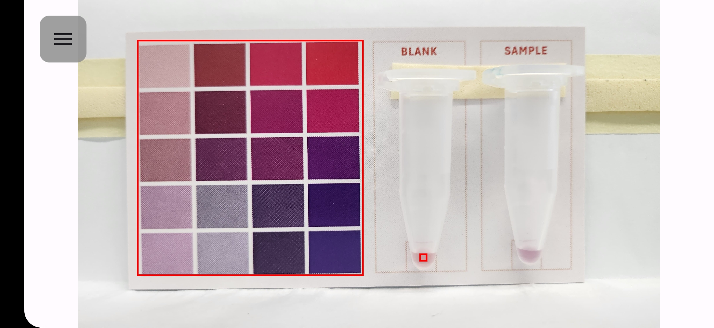
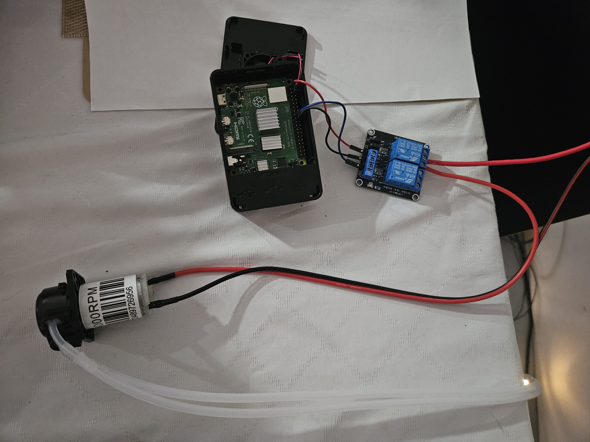

IoT Biosensor & Biocide Dispensing System
An end-to-end IoT system designed to detect bacterial contamination in industrial tanks and automatically dispense the precise dosage of biocide.

Project Overview
This project addresses the problem of bacterial contamination in environments such as fuel tanks. It consists of two main components working together over an IoT network (MQTT): an Android image analysis application for detecting microbe concentrations, and an automated Raspberry Pi dispensing system that calculates and delivers the exact amount of biocide needed based on the Minimum Inhibitory Concentration (MIC) of the detected bacterial strain.
1. Android Image Analysis Application
The Android app serves as the primary user interface and sensor for the system. It uses the smartphone's camera to perform colorimetric analysis on test tube samples.
- Color Calibration: The user traces a color calibration area to standardize lighting conditions.
- Blank & Sample Selection: The user selects a "Blank" test tube (control) and a "Sample" test tube.
- Concentration Calculation: The app processes the color difference to determine the bacterial concentration (CFU/mL) in the sample.
- MQTT Transmission: The calculated concentration and the selected bacterial strain are transmitted wirelessly to the dispensing system via the MQTT protocol.
2. Automated Dispensing System (Raspberry Pi)
The physical dispensing hardware is controlled by a Raspberry Pi running a Python script, connected to a 12V peristaltic pump via a GPIO relay.

System Logic
The system operates in either Manual or Automated mode. In Automated mode:
- The Raspberry Pi subscribes to the MQTT topic and listens for data from the Android app.
- Upon receiving the microbe concentration and strain selection, it checks if the concentration exceeds the safe threshold.
- If contamination is detected, it calculates the required biocide dosage based on the strain's specific Minimum Inhibitory Concentration (MIC).
- The calculation converts the required mass (μg) into the required volume (mL) of the biocide stock solution, and then calculates the required pump activation time based on the pump's flow rate (e.g., 10 mL/sec).
- The GPIO relay is triggered to activate the peristaltic pump for the precise duration calculated, automatically dosing the tank without human intervention.
Dispensing Algorithm
def calculate_dispense_time(mic, volume_ml, stock_concentration_mg_per_ml):
# Calculate total mass in µg needed for the culture volume
total_mass_ug = mic * volume_ml
# Convert total mass to volume required from the stock solution
stock_concentration_ug_per_ml = stock_concentration_mg_per_ml * 1000
total_volume_ml = total_mass_ug / stock_concentration_ug_per_ml
# Calculate dispense time based on pump flow rate (e.g., 10 mL/sec)
dispense_time_sec = total_volume_ml / PUMP_FLOW_RATE
return dispense_time_secSkills & Technologies
Python, Android Studio (Kotlin/Java), Raspberry Pi, GPIO/Hardware Relays, IoT (MQTT), Image Processing, Systems Integration